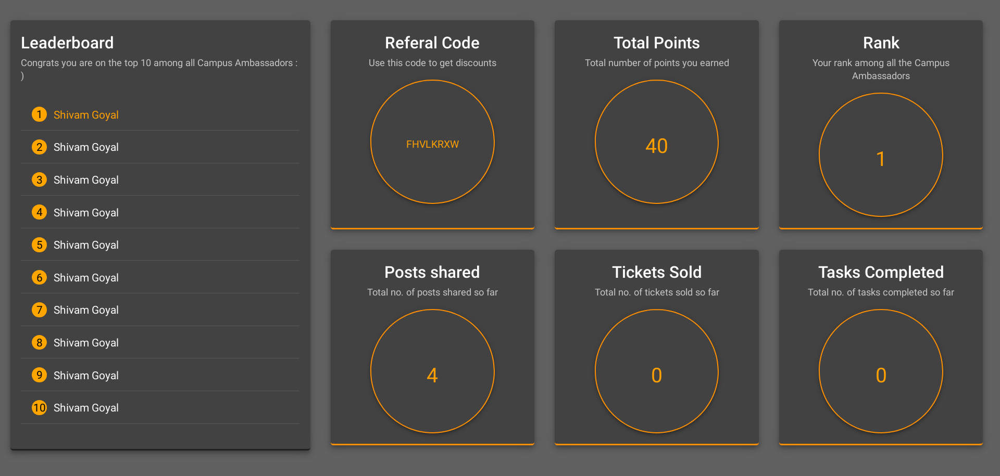
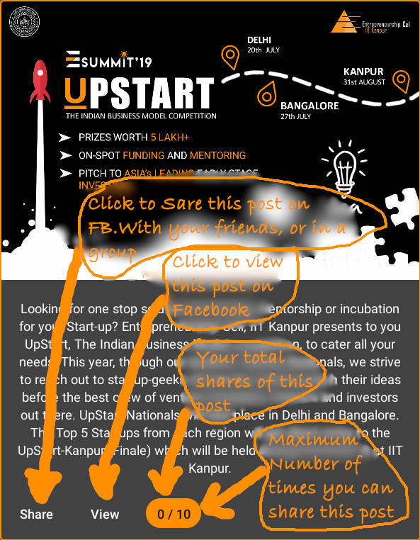
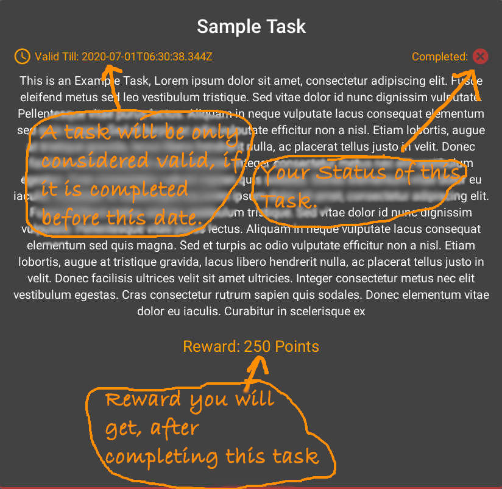

You can visit the Dashboard section to see your total points and other related stuff. The dashboard also shows top 10 Campus Ambassadors
. Our ranking priority order is: total-points, tickets-booked, tasks-completed respectively. However if more than one person have all these
three criterias same, then we will consider them equal.

The FB Posts section contains posts. Which you can share share on Facebook with friends or on a group, page...
The larger the audience the better.
Remember, a facebook post can have expiry date after which the post will be disappered from the page.
For each share you will be rewarded 10 points.
Also, there is a limit on max reward. But still, feel free to share.

The tasks section contain tasks which you have to complete before the time limit. After completing you have to send a valid proof of task completion to us to get reward. More info on tasks will be added soon !